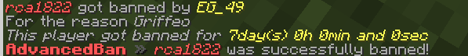
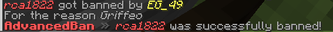
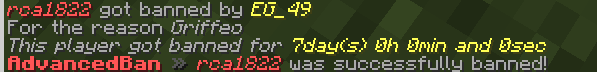
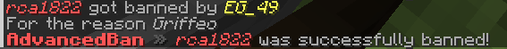

El moderar un servidor de minecraft no es una tarea fácil pero a lo largo de la historia de minecraft han habido varios plugins que nos facilitan la actividad de moderación
Los plugins que nos facilitan a la moderación son:
Imagénes referenciales:

 


